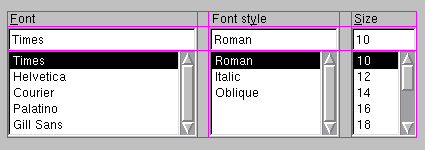

The QGridLayout class lays out child widgets in a grid. More...
#include <qlayout.h>
Inherits QLayout.
QGridLayout takes the space it gets (from its parent layout or from the mainWidget()), divides it up into rows and columns, and puts each of the child widgets it manages into the correct cell(s).
Columns and rows behave identically; we will discuss columns but there are eqivalent functions for rows.
Each column has a minimum width and a stretch factor. The minimum width is the greatest of that set using addColSpacing() and the minimum width of each widget in that column. The stretch factor is set using setColStretch() and determines how much of the available space the column will get, over and above its necessary minimum.
Normally, each child widget or layout is put into a cell of its own using addWidget() or addLayout(), but you can also put widget into multiple cells using addMultiCellWidget(). However, if you do that, QGridLayout does not take the child widget's minimum size into consideration (because it cannot know what column the minimum width should belong to). Thus you must set the minimum width of each column using addColSpacing().
This illustration shows a fragment of a dialog with a five-column, three-row grid (the grid is shown overlaid in magenta):

Columns 0, 2 and 4 in this dialog fragment are made up of a QLabel, a QLineEdit and a QListBox. Columns 1 and 2 are placeholders, made with setColSpacing(). Row 0 consists of three QLabel objects, row 1 of three QLineEdit objects and row 2 of three QListBox objects.
Since we did not want any space between the rows, we had to use placeholder columns to get the right amount of space between the columns.
Note that the columns and rows are not equally wide/tall: If you want two columns to be equally wide, you must set the columns' minimum widths and stretch factors to be the same yourself. You do this using addColSpacing() and setStretch().
If the QGridLayout is not the top-level layout (ie. is not managing all of the widget's area and children), you must add it to its parent layout when you have created it, but before you can do anything with it. The normal way to add a layout is by calling parentLayout->addLayout().
Once you have done that, you can start putting widgets and other layouts in the cells of your grid layout using addWidget(), addLayout() and addMultiCellWidget().
Finally, if the grid is the top-level layout, you activate() it.
QGridLayout also includes two margin widths: The border width and the inter-box width. The border width is the width of the reserved space along each of the QGridLayout's four sides. The intra-widget width is the width of the automatically allocated spacing between neighbouring boxes.
The border width defaults to 0, and the intra-widget width defaults to the same as the border width. Both are set using arguments to the constructor.
Examples: pref/pref.cpp layout/layout.cpp widgets/widgets.cpp
Constructs a new QGridLayout with nRows rows, nCols columns and main widget parent. parent may not be 0.
border is the number of pixels between the edge of the widget and the managed children. autoBorder is the default number of pixels between cells. If autoBorder is -1 the value of border is used.
name is the internal object name.
Constructs a new grid with nRows rows and nCols columns, If autoBorder is -1, this QGridLayout will inherits its parent's defaultBorder(), otherwise autoBorder is used.
You have to insert this grid into another layout before using it.
Deletes this grid. Geometry management is terminated if this is a top-level grid.
Sets the minimum width of col to minsize pixels.
Places another layout at position (row, col) in the grid. The top left position is (0,0).
Examples: widgets/widgets.cpp
Adds the widget w to the cell grid, spanning multiple rows/columns.
Note that multicell widgets do not influence the minimum or maximum size of columns/rows they span. Use addColSpacing() or addRowSpacing() to set minimum sizes explicitly.
Alignment is specified by align which takes the same arguments as QLabel::setAlignment(), alignment has no effect unless you have set QWidget::maximumSize().
Examples: layout/layout.cpp widgets/widgets.cpp
Sets the minimum height of row to minsize pixels.
Adds the widget w to the cell grid at row, col. The top left position is (0,0)
Alignment is specified by align which takes the same arguments as QLabel::setAlignment(). Note that widgets take all the space they can get; alignment has no effect unless you have set QWidget::maximumSize().
Examples: pref/pref.cpp layout/layout.cpp widgets/widgets.cpp
Expands this grid so that it will have nRows rows and nCols columns. Will not shrink the grid.
[virtual protected]Initializes this grid.
Reimplemented from QLayout.
[virtual protected]This function returns the main horizontal chain.
Reimplemented from QLayout.
[virtual protected]This function returns the main vertical chain.
Reimplemented from QLayout.
Returns the number of columns in this grid.
Returns the number of rows in this grid.
Sets the stretch factor of column col to stretch. The first column is number 0.
The stretch factor is relative to the other columns in this grid. Columns with higher stretch factor take more of the available space.
The default stretch factor is 0. If the stretch factor is 0 and no other column in this table can grow at all, the column may still grow.
Examples: pref/pref.cpp layout/layout.cpp widgets/widgets.cpp
Sets the stretch factor of row row to stretch. The first row is number 0.
The stretch factor is relative to the other rows in this grid. Rows with higher stretch factor take more of the available space.
The default stretch factor is 0. If the stretch factor is 0 and no other row in this table can grow at all, the row may still grow.
Examples: widgets/widgets.cpp
Search the documentation, FAQ, qt-interest archive and more (uses
www.troll.no):
This file is part of the Qt toolkit, copyright © 1995-99 Troll Tech, all rights reserved.
It was generated from the following files:
| Copyright © 1999 Troll Tech | Trademarks | Qt version 1.45
|